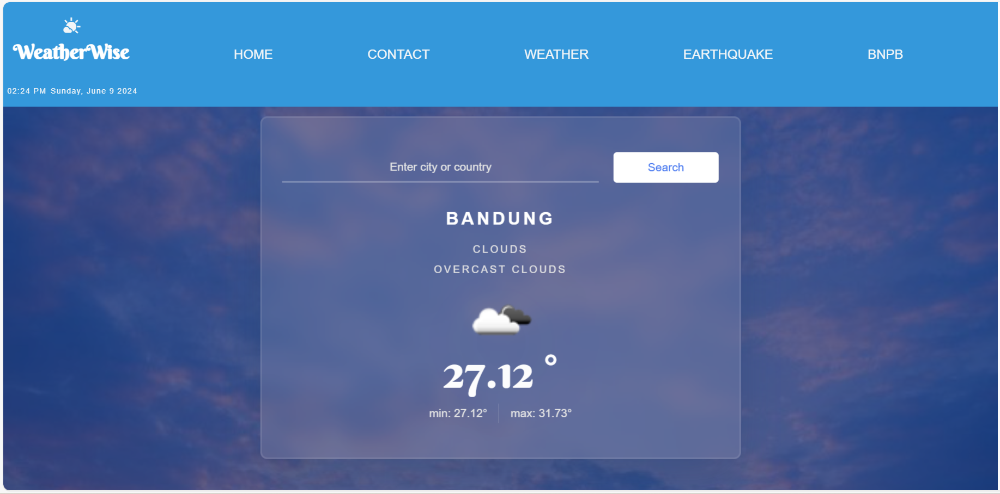
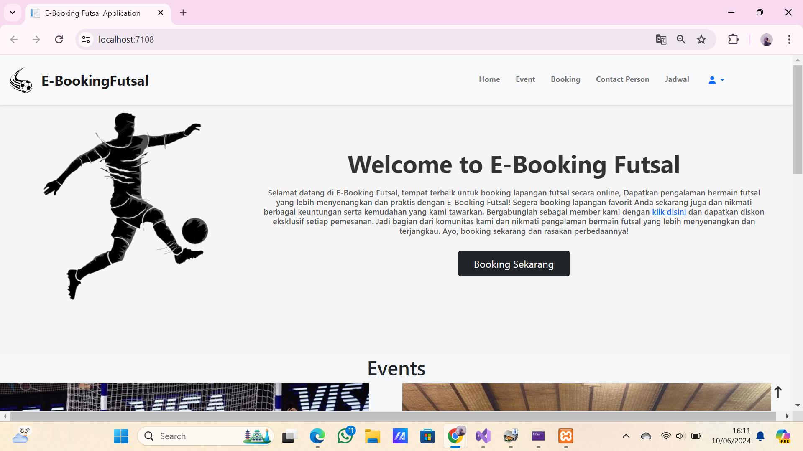
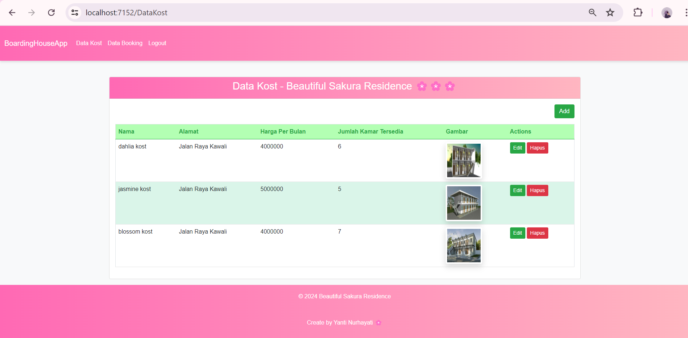
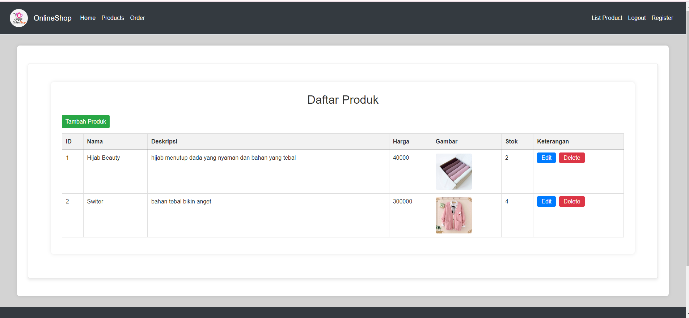
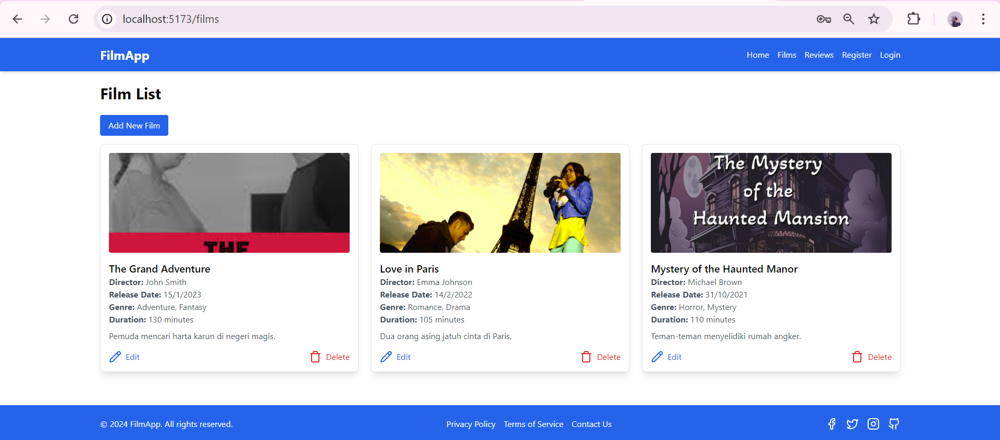
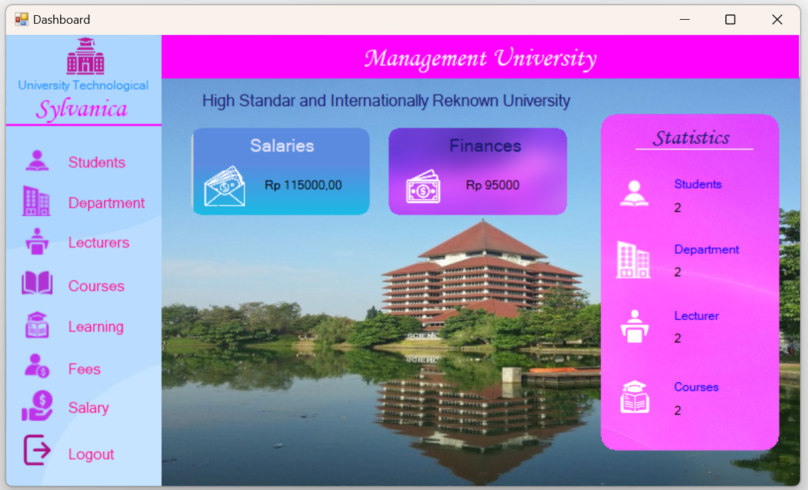
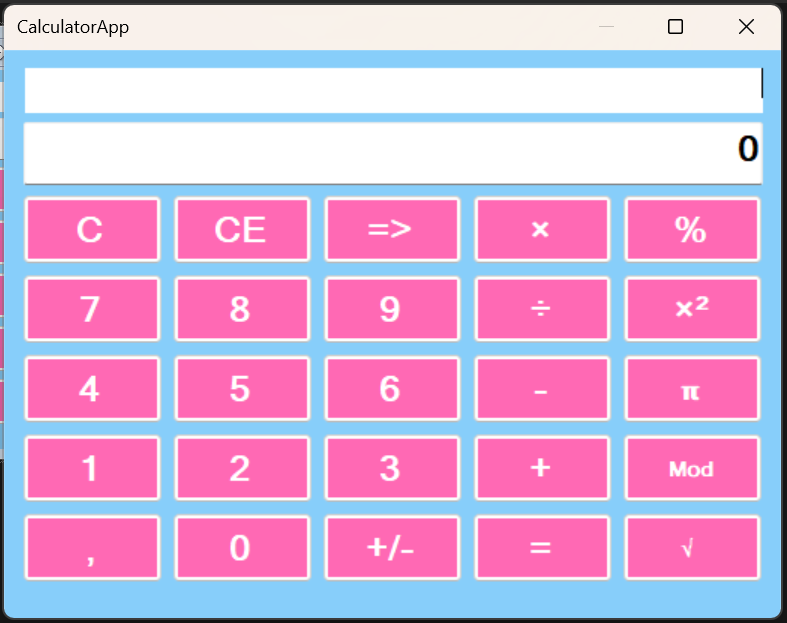
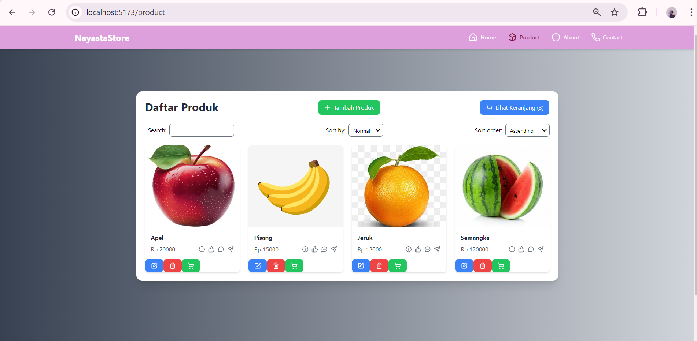
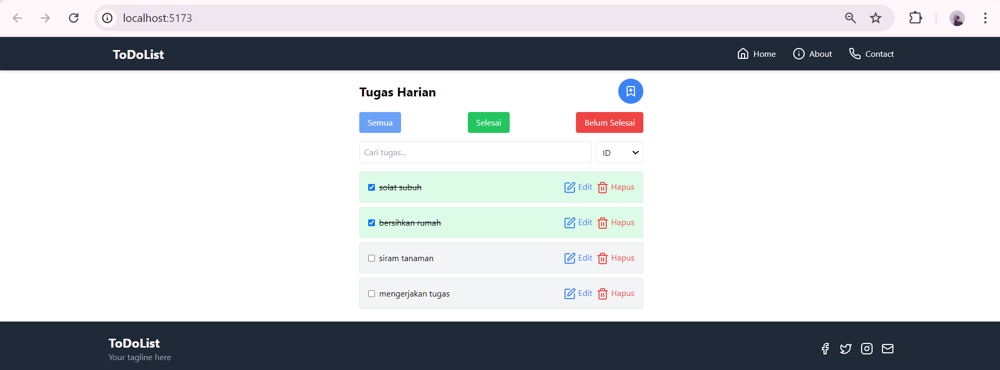
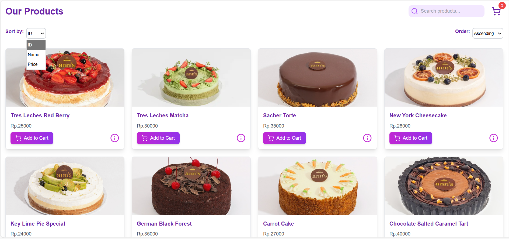

I am a fresh graduate from Universitas Nasional Pasim with a D3 degree in Informatics Management and two years of experience in programming, particularly using C# and .NET. I also have one year of work experience as a Quality Assurance (QA), with responsibilities including creating test plans, writing and executing test cases, performing manual and regression testing, and having a basic understanding of automation testing. I am comfortable working both independently and in a team, with strong communication and problem-solving skills. I am highly motivated to continue learning and developing my skills in both software development and quality assurance.
Skills
Work Experience
Organizational Experience
Education










yantinurhayati051@gmail.com
085321840790
Copyright @Yanti. Made with heart